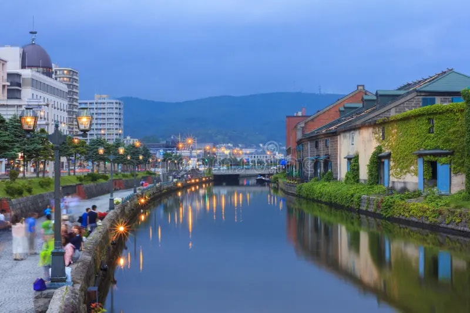

Канал Отару
Каменные склады тянутся вдоль воды, а газовые фонари отмечают прогулочную набережную бывшего грузового порта.
🇯🇵 Показать местному
北海道小樽市港町
Что этоБывший грузовой канал с прогулочной набережной и историческими складами.
ГлавноеИзгиб воды и каменные фасады, обращённые к каналу.
Не пропуститеГазовые фонари и отражения складов с мостов.
- Каменные склады — вдоль противоположного берега канала.
- Газовые фонари — на прогулочной набережной.
- Изгиб водного пути — с мостов над каналом.
- Вывески стекольных и сувенирных лавок — на Sakaimachi Street, 堺町通り.
- 💡 Свободное время для прогулки по каналу, старым улицам, сувенирным магазинам и обеда. Если времени мало, сначала прогуляйся вдоль канала, а потом загляни на Sakaimachi Street.
- Уточните у сопровождающего место сбора и возвращайтесь к нему по условиям вашей экскурсии.
- На мостах оставляйте проход другим пешеходам; для фотографии остановитесь у края, не выходя на дорогу.
История и подробности
С набережной видно, как был устроен портовый Отару: вода подходит к длинным складским фасадам, а мосты связывают береговые улицы. Сегодня часть зданий занята ресторанами и другими заведениями. Камень, спокойная поверхность канала и газовые фонари создают узнаваемый вид, но за ним стоит вполне практическая история перевозки грузов.
Канал завершили в 1923 году. Большие суда разгружали на рейде, а небольшие баржи подвозили товары к складам. Водный путь создали, отсыпав землю со стороны моря, поэтому он сохранил плавный изгиб прежнего побережья. Позднее новые причалы позволили разгружать суда напрямую, и необходимость в баржах уменьшилась.
Когда канал потерял хозяйственную роль, возник проект его засыпки ради автомобильной дороги. Последовал многолетний спор о сохранении портового пейзажа. В 1986 году часть водного пространства засыпали, а вдоль оставшегося канала устроили набережную. Участок вдоль дороги стал уже; северная часть сохранила первоначальную ширину. Нынешний вид — результат этого компромисса.
Sakaimachi Street, 堺町通り, продолжает знакомство с торговым городом: здесь работают лавки стекла, музыкальных шкатулок, сладостей и морепродуктов. Она входит в ваше свободное время, без отдельного часа и обязательного магазина. Сначала осмотрите канал, затем выбирайте оставшуюся часть прогулки и обед по вашей заметке.
- 1923 — завершён канал для доставки портовых грузов на баржах.
- 1986 — после споров о засыпке устроены дорога и прогулочная набережная.